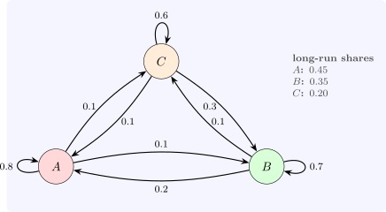

15.1 Markov chains
A Markov chain on states \(1, \ldots , m\) has transition probabilities \(p_{ij} = P(X_{t + 1} = j \mid X_t = i)\), independent of the earlier history and of \(t\); the transition matrix \(P = (p_{ij})\) has non-negative entries and rows summing to \(1\). If the distribution of \(X_t\) is the row vector \(\pi ^{(t)}\), then \(\pi ^{(t + 1)} = \pi ^{(t)}P\), and so \(\pi ^{(t)} = \pi ^{(0)}P^t\): the \(n\)-step transition probabilities are the entries of \(P^n\) (the Chapman–Kolmogorov equations).
Example 15.1.1. Customers buy one of three brands each month. Of those who bought \(A\), \(80\%\) buy \(A\) again, \(10\%\) switch to \(B\) and \(10\%\) to \(C\); the other rows are \((0.2, 0.7, 0.1)\) for \(B\) and \((0.1, 0.3, 0.6)\) for \(C\) (Figure 15). A customer who buys \(A\) this month buys \(A\), \(B\), \(C\) two months later with probabilities \((0.67, 0.18, 0.15)\), the first row of \(P^2\).

Definition 15.1.2. A distribution \(\pi \) with \(\pi P = \pi \) is stationary. A chain is irreducible if every state can be reached from every other, and aperiodic if some state has \(p_{ii} > 0\) (or, more generally, the return times to a state have greatest common divisor \(1\)).
Theorem 15.1.3 (Ergodic theorem for finite chains). A finite irreducible aperiodic chain has a unique stationary distribution \(\pi \), with all \(\pi _j > 0\), and \(P^n \to \mathbf 1\pi \) as \(n \to \infty \): whatever the starting state, \(P(X_n = j) \to \pi _j\). Moreover the mean time between visits to \(j\) is \(1/\pi _j\), and the long-run fraction of time in state \(j\) is \(\pi _j\).
Sketch. Some power \(P^k\) has all entries positive (irreducibility and aperiodicity), say at least \(\delta > 0\). Then for any two distributions \(\mu \), \(\nu \), \(\|\mu P^k - \nu P^k\|_1 \leq (1 - m\delta )\|\mu - \nu \|_1\), since the two rows share a common part of mass at least \(m\delta \). So \(\mu \mapsto \mu P^k\) is a contraction, the distributions \(\mu P^n\) converge geometrically to a unique fixed point \(\pi \), and \(\pi P = \pi \). The statements about times follow from the renewal theorem. □
For Example 15.1.1 the stationary distribution is \((0.45, 0.35, 0.20)\), and every row of \(P^{20}\) already equals it to four digits (Software 15.5.1). The brands’ long-run shares do not depend on their present shares; a marketing campaign that changes only the present shares has no lasting effect, while one that changes the transition probabilities (loyalty) does.
Questions on this section
Stuck on something here? Ask below and it stays attached to this topic.